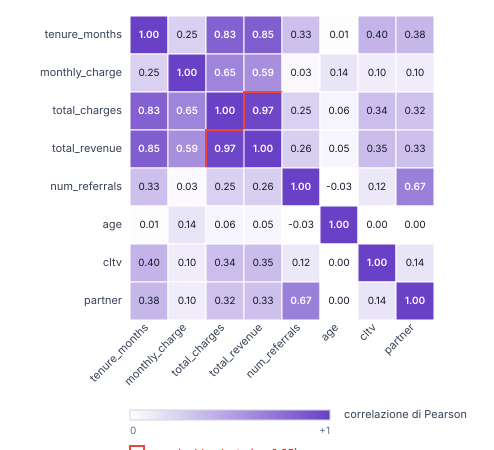

Un modello di Machine Learning per prevedere il churn dei clienti telefonici, costruito su 7.043 contratti reali e valutato su un test mai visto dal modello.
| # | Capitolo | Cosa copriamo | Durata |
|---|---|---|---|
| 01 | Il problema | Cos'è il churn e perché costa | 2 min |
| 02 | Dataset & metodo | 49 colonne, data leakage, scelte di pulizia | 3 min |
| 03 | Chi abbandona? | Profili, contratti, tenure, costi | 3 min |
| 04 | Come funzionano i modelli | Decision Tree, Random Forest, MLP | 3 min |
| 05 | I risultati | Confronto, vincitore, feature importance | 4 min |
| 06 | Riflessioni critiche | Limiti, etica, applicazioni reali | 2 min |
Identifica zero clienti a rischio. Per il marketing, vale zero.
Pesa equamente entrambe le classi: la performance sui clienti rimasti e sui clienti persi contano allo stesso modo.
| Colonna | Perché è tossica | |
|---|---|---|
| × | Churn | È la risposta stessa. |
| × | Churn Score | Score interno calcolato dopo l'abbandono. |
| × | Churn Category | Categoria assegnata a posteriori. |
| × | Churn Reason | Motivazione data dal cliente uscente. |
| × | Customer Status | Indica se è già attivo / perso / nuovo. |
Una sola variabile — il tipo di contratto — peserà il 57% delle decisioni del modello vincitore. Questo è il singolo insight più importante per il marketing.
+22% di costo medio mensile per chi se ne va.
La fibra costa di più e attende di più.
Fibra ottica
+ contratto mensile
+ zero servizi extra
= candidato al churn.

| Coppia | r |
|---|---|
| Partner ↔ Married | 1.00 |
| Total Charges ↔ Total Revenue | 0.97 |
Testati 4 metodi (z-score, IQR, DBSCAN, Isolation Forest). ✓ mantenuti
Sono clienti reali, non errori.
max_depth = 5
class_weight = balanced
features = top 10 (SelectKBest)
«Cento sondaggi indipendenti su cento campioni diversi. Il singolo sondaggio sbaglia. La media di cento è quasi sempre più affidabile.»
MLPClassifier di scikit-learn non supporta class_weight: non compensa lo sbilanciamento.
Risultato: bravo a riconoscere chi resta, meno bravo a riconoscere chi se ne va — l'opposto di ciò che ci serve.
| Modello | Precision (churn) | Recall (churn) | F1 (churn) | Macro F1 |
|---|---|---|---|---|
| Baseline (DummyClassifier) | 0.00 | 0.00 | 0.00 | 0.42 |
| Logistic Regression | 0.56 | 0.87 | 0.68 | 0.76 |
| Decision Tree (max_depth=5) BEST | 0.56 | 0.89 | 0.69 | 0.764 |
| Random Forest (100 alberi) | 0.67 | 0.58 | 0.63 | 0.75 |
| MLP (64-32, early stopping) | 0.70 | 0.56 | 0.62 | 0.75 |
Recall 0.89 sui churned: su 100 clienti che stanno per andarsene, ne intercetta 89. Per il marketing, è la metrica più importante.
Random Forest e MLP hanno precision più alta — meno falsi allarmi — ma perdono troppi clienti veri (recall basso).
| Variabile | SelectKBest | Stepwise Forward | Stepwise Backward |
|---|---|---|---|
| contract_Month-to-Month | ✓ TOP | ✓ TOP | ✓ TOP |
| tenure_months | ✓ TOP | ✓ TOP | ✓ TOP |
| monthly_charge | ✓ | ✓ | ✓ |
| internet_type_Fiber Optic | ✓ | ✓ | ✓ |
| num_referrals | ✓ | ✓ | — |
SelectKBest valuta le feature una alla volta. Stepwise le valuta in combinazione: aggiunge/rimuove gradualmente, tenendo conto delle interazioni.
La concordanza dei tre metodi è la firma di un segnale forte: contratto, tenure e costo guidano il churn, indipendentemente da come le selezioni.
Se diamo sconti solo ai clienti a rischio, premiamo chi minaccia di andarsene e penalizziamo chi paga il prezzo pieno per fedeltà. È una pratica diffusa, ma discutibile.
Il modello impara dai dati passati. Se in passato certi gruppi hanno ricevuto un servizio peggiore, il modello li classificherà come "a rischio" — e l'azienda agirà su quella base, perpetuando la disuguaglianza.
In ordine: il segnale, il modello, l'azione.